library(tidyverse)
library(brms)
library(tidybayes)
library(patchwork)
library(posterior)
library(broom.mixed)
set.seed(1234)Reading notes
Posteriors from grids
Assuming 9 globe tosses, 6 are water:
W L W W W L W L WOr in code:
tosses <- c("W", "L", "W", "W", "W", "L", "W", "L", "W")
table(tosses)
## tosses
## L W
## 3 6Given this data, what’s the proportion of water on the globe?
- Make a list of all possible proportions, ranging from 0 to 1
- Calculate the number of possible pathways to get to that proportion
Grid approximation
For each possible value of \(p\), compute the product \(\operatorname{Pr}(W, L \mid p) \times \operatorname{Pr}(p)\). The relative sizes of each of those products are the posterior probabilities.
Base R with Rethinking
Uniform flat prior
# List of possible explanations of p to consider
p_grid <- seq(from = 0, to = 1, length.out = 10000)
plot(p_grid, main = "Possible proportions (p)")
#
# Probability of each value of p
# Super vague uniform prior: just 1 at each possible p
prob_p_uniform <- rep(1, 10000)
plot(prob_p_uniform, main = "Uniform flat prior")
#
# Probability of each proportion, given 6/9 water draws
prob_data <- dbinom(6, size = 9, prob = p_grid)
# Unnormalized posterior
posterior_raw <- prob_data * prob_p_uniform
plot(posterior_raw, main = "Unnormalized posterior")
#
# Normalized posterior that sums to 1
posterior_normalized <- posterior_raw / sum(posterior_raw)
plot(posterior_normalized, main = "Normalized posterior")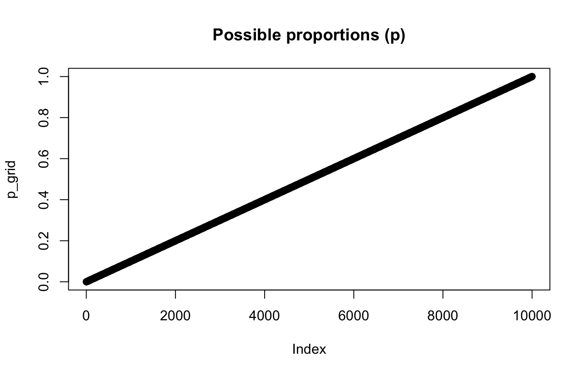
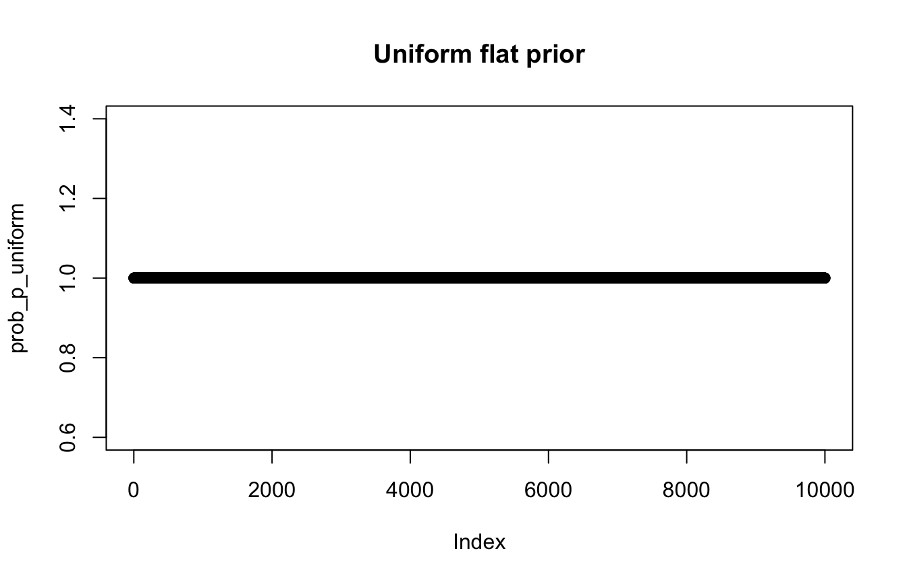
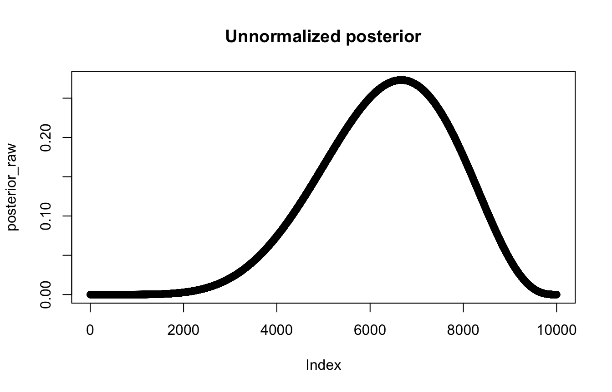
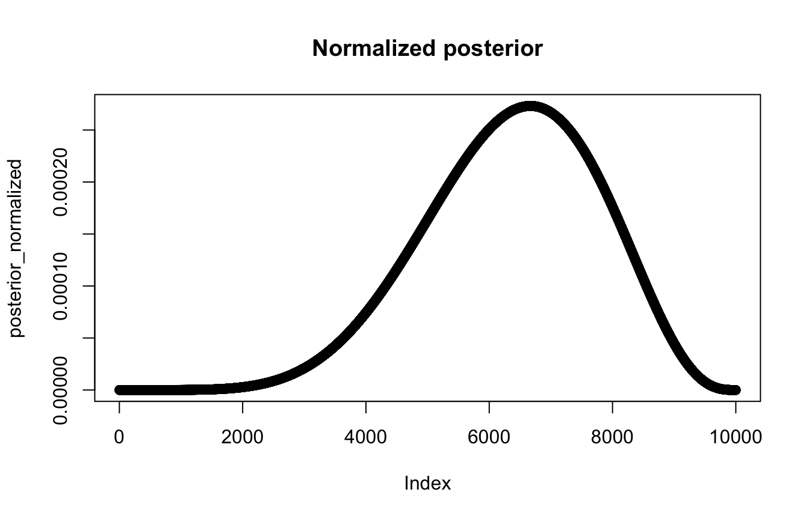
Beta prior
# Beta distribution with 3 / (3 + 1)
prob_p_beta <- dbeta(p_grid, shape1 = 3, shape2 = 1)
plot(prob_p_beta, main = "Beta(3, 1) prior")
#
# Posterior that sums to 1
posterior_normalized_beta <- (prob_data * prob_p_beta) / sum(posterior_raw)
plot(posterior_normalized_beta, main = "Normalized postiorior with beta prior")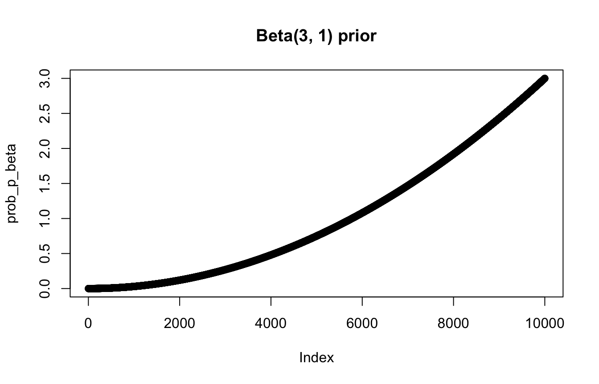
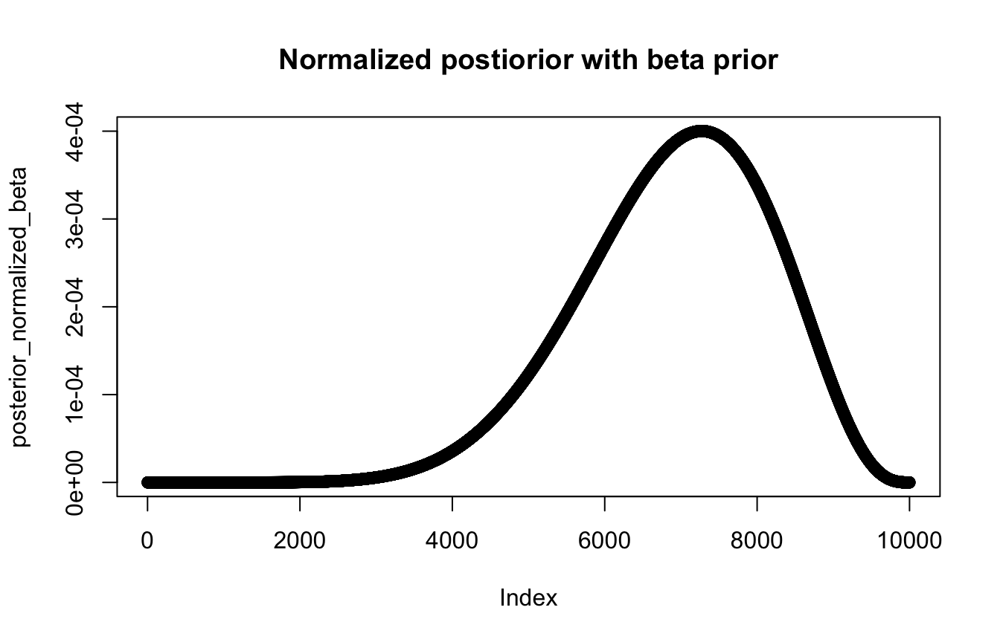
Tidyverse style from Solomon Kurz
globe_tossing <- tibble(p_grid = seq(from = 0, to = 1, length.out = 1001),
prior_uniform = 1) %>% # prob_p_uniform from earlier
mutate(prior_beta = dbeta(p_grid, shape1 = 3, shape2 = 1)) %>% # prob_p_beta from earlier
mutate(likelihood = dbinom(6, size = 9, prob = p_grid)) %>% # prob_data from earlier
mutate(posterior_uniform = (likelihood * prior_uniform) / sum(likelihood * prior_uniform),
posterior_beta = (likelihood * prior_beta) / sum(likelihood * prior_beta))
globe_tossing
## # A tibble: 1,001 × 6
## p_grid prior_uniform prior_beta likelihood posterior_uniform posterior_beta
## <dbl> <dbl> <dbl> <dbl> <dbl> <dbl>
## 1 0 1 0 0 0 0
## 2 0.001 1 0.000003 8.37e-17 8.37e-19 1.97e-24
## 3 0.002 1 0.000012 5.34e-15 5.34e-17 5.04e-22
## 4 0.003 1 0.0000270 6.07e-14 6.07e-16 1.29e-20
## 5 0.004 1 0.000048 3.40e-13 3.40e-15 1.28e-19
## 6 0.005 1 0.000075 1.29e-12 1.29e-14 7.62e-19
## 7 0.006 1 0.000108 3.85e-12 3.85e-14 3.27e-18
## 8 0.007 1 0.000147 9.68e-12 9.68e-14 1.12e-17
## 9 0.008 1 0.000192 2.15e-11 2.15e-13 3.24e-17
## 10 0.009 1 0.000243 4.34e-11 4.34e-13 8.30e-17
## # … with 991 more rowsglobe_tossing %>%
pivot_longer(starts_with("posterior")) %>%
ggplot(aes(x = p_grid, y = value, fill = name)) +
geom_area(position = position_identity(), alpha = 0.5)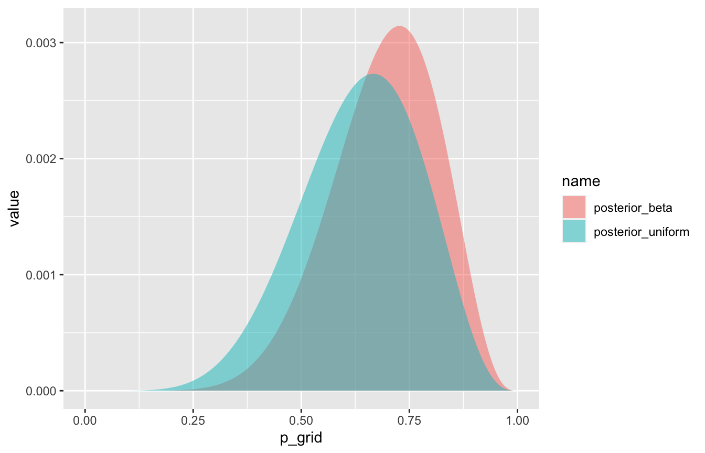
Working with the posterior
We now have a posterior! We typically can’t use the posterior alone. We have to average any inference across the entire posterior. This requires calculus, which is (1) hard, and (2) often impossible. So instead, we can use samples from the distribution and make inferences based on those.
3.2: Sampling to summarize
Here are 10,000 samples from the posterior (based on the uniform flat prior). These are the sampling distributions.
samples <- sample(p_grid, prob = posterior_normalized, size = 10000, replace = TRUE)
plot(samples, main = "10,000 posterior samples")
#
plot(density(samples), main = "Distribution of 10,000 posterior samples")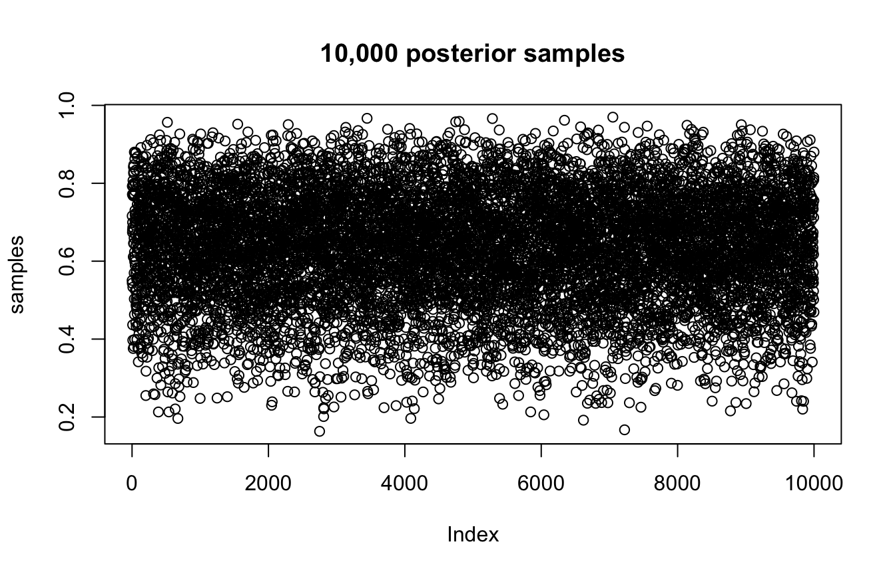
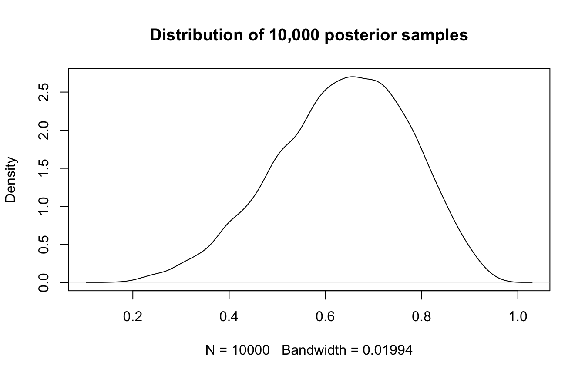
samples_tidy <- globe_tossing %>%
slice_sample(n = 10000, weight_by = posterior_uniform, replace = T)3.2.1: Intervals of defined boundaries
What’s the probability that the proportion of water is less than 50%?
sum(samples < 0.5) / 10000
## [1] 0.1745How much of the posterior is between 50% and 75%?
sum(samples > 0.5 & samples < 0.75) / 10000
## [1] 0.6037What’s the probability that the proportion of water is less than 50%?
globe_tossing %>%
ggplot(aes(x = p_grid, y = posterior_uniform)) +
geom_line() +
geom_area(data = filter(globe_tossing, p_grid < 0.5))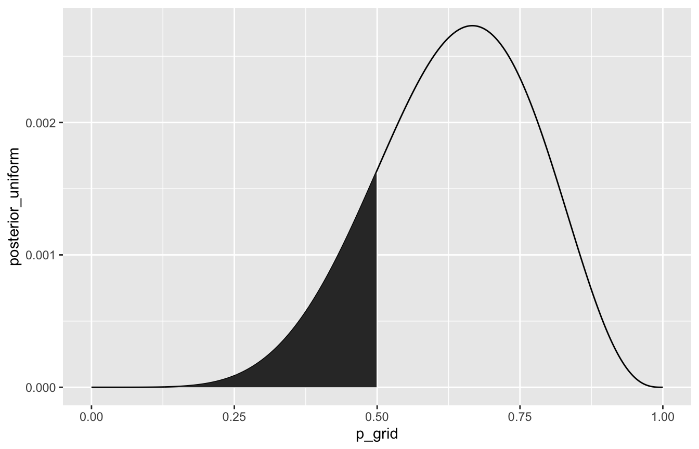
samples_tidy %>%
count(p_grid < 0.5) %>%
mutate(probability = n / sum(n))
## # A tibble: 2 × 3
## `p_grid < 0.5` n probability
## <lgl> <int> <dbl>
## 1 FALSE 8321 0.832
## 2 TRUE 1679 0.168How much of the posterior is between 50% and 75%?
globe_tossing %>%
ggplot(aes(x = p_grid, y = posterior_uniform)) +
geom_line() +
geom_area(data = filter(globe_tossing, p_grid > 0.5 & p_grid < 0.75))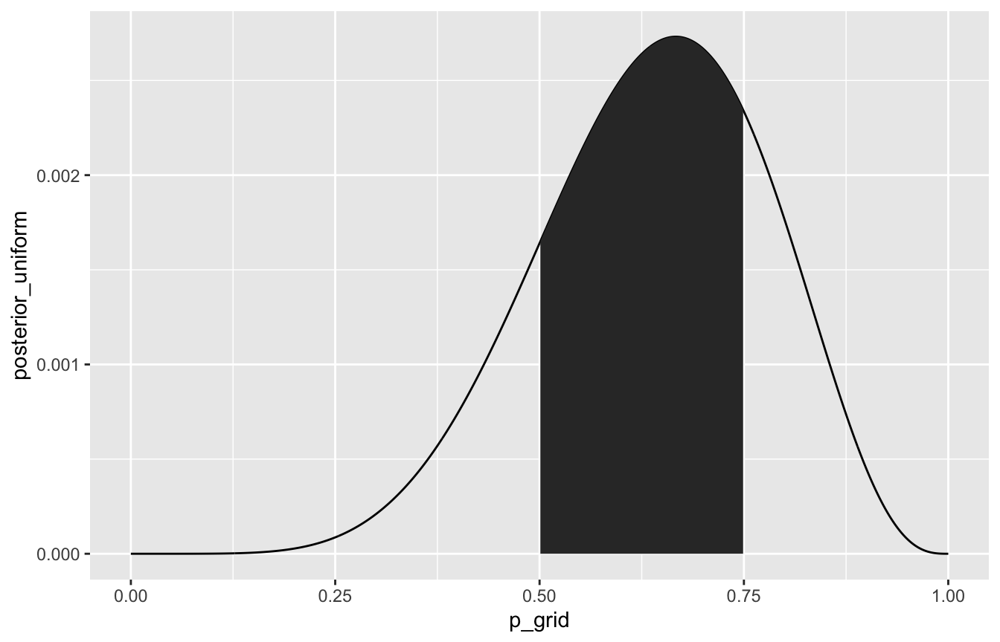
samples_tidy %>%
count(p_grid > 0.5 & p_grid < 0.75) %>%
mutate(probability = n / sum(n))
## # A tibble: 2 × 3
## `p_grid > 0.5 & p_grid < 0.75` n probability
## <lgl> <int> <dbl>
## 1 FALSE 4000 0.4
## 2 TRUE 6000 0.63.2.2: Intervals of defined mass
Lower 80% posterior probability lies below this number:
quantile(samples, 0.8)
## 80%
## 0.759576Middle 80% posterior probability lies between these numbers:
quantile(samples, c(0.1, 0.9))
## 10% 90%
## 0.4448445 0.810691150% percentile interval vs. 50% HPDI
quantile(samples, c(0.25, 0.75))
## 25% 75%
## 0.5416292 0.7387989
rethinking::HPDI(samples, prob = 0.5)
## |0.5 0.5|
## 0.5659566 0.7592759Lower 80% posterior probability lies below this number:
samples_tidy %>%
summarize(`80th percentile` = quantile(p_grid, 0.8))
## # A tibble: 1 × 1
## `80th percentile`
## <dbl>
## 1 0.762Middle 80% posterior probability lies between these numbers:
samples_tidy %>%
summarize(q = c(0.1, 0.9), percentile = quantile(p_grid, q)) %>%
pivot_wider(names_from = q, values_from = percentile)
## # A tibble: 1 × 2
## `0.1` `0.9`
## <dbl> <dbl>
## 1 0.45 0.81150% percentile interval vs. 50% HPDI
samples_tidy %>%
summarize(q = c(0.25, 0.75),
percentile = quantile(p_grid, q),
hpdi = HDInterval::hdi(p_grid, 0.5))
## # A tibble: 2 × 3
## q percentile hpdi
## <dbl> <dbl> <dbl>
## 1 0.25 0.544 0.563
## 2 0.75 0.742 0.7563.2.3: Point estimates
mean(samples)
## [1] 0.6352952
median(samples)
## [1] 0.6448645samples_tidy %>%
summarize(mean = mean(p_grid),
median = median(p_grid))
## # A tibble: 1 × 2
## mean median
## <dbl> <dbl>
## 1 0.638 0.6463.3: Sampling to simulate prediction
Base R
We can use the uncertainty inherent in the sampling distributions from above to generate a posterior predictive distribution, based on a 9-toss situation:
# Posterior predictive distribution
posterior_predictive_dist <- rbinom(10000, size = 9, prob = samples)
hist(posterior_predictive_dist, breaks = 0:9)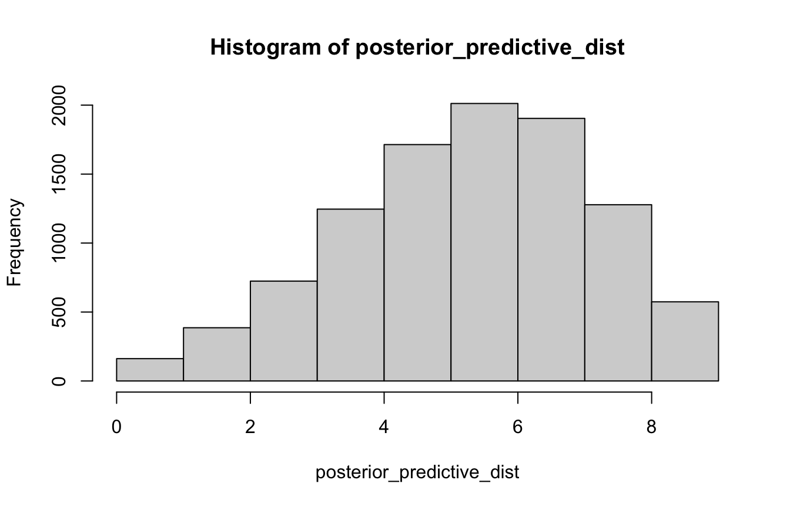
Tidyverse style
# Generate 100,000 samples from the posterior
samples_tidy <- globe_tossing %>%
slice_sample(n = 100000, weight_by = posterior_uniform, replace = T)
#
samples_tidy %>%
mutate(sample_number = 1:n()) %>%
ggplot(aes(x = sample_number, y = p_grid)) +
geom_point(alpha = 0.05) +
labs(title = "100,000 posterior samples", x = "Sample number")
#
samples_tidy %>%
ggplot(aes(x = p_grid)) +
geom_density(fill = "grey50", color = NA) +
labs(title = "Distribution of 100,000 posterior samples")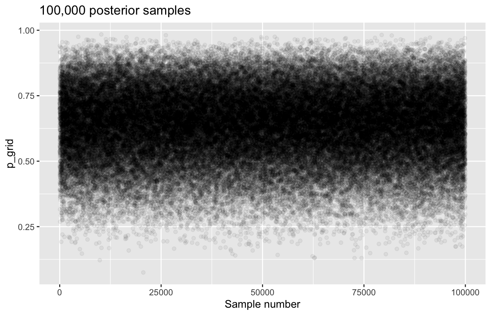
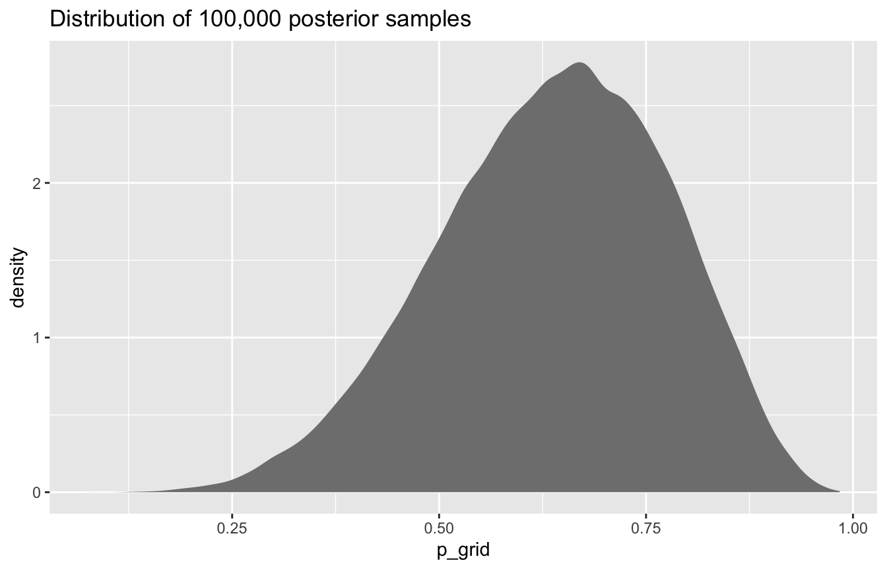
Figure 3.6 with ggplot
# Posterior probability
globe_smaller <- globe_tossing %>%
filter(p_grid %in% c(seq(0.1, 0.9, 0.1), 0.3))
panel_top <- globe_tossing %>%
ggplot(aes(x = p_grid, y = posterior_uniform)) +
geom_area(fill = "grey50", color = NA) +
geom_segment(data = globe_smaller, aes(xend = p_grid, yend = 0, size = posterior_uniform)) +
geom_point(data = globe_smaller) +
scale_size_continuous(range = c(0, 1), guide = "none") +
scale_x_continuous(breaks = seq(0, 1, 0.1)) +
scale_y_continuous(NULL, breaks = NULL) +
labs(x = "Proportion/probability of water",
title = "Posterior probability") +
theme(panel.grid = element_blank(),
plot.title = element_text(face = "bold"))
# Sampling distributions
globe_sample_dists <- tibble(probability = seq(0.1, 0.9, 0.1)) %>%
mutate(draws = map(probability, ~{
set.seed(1234)
rbinom(10000, size = 9, prob = .x)
})) %>%
unnest(draws) %>%
mutate(label = paste0("p = ", probability))
panel_middle <- ggplot(globe_sample_dists, aes(x = draws)) +
geom_histogram(binwidth = 1, center = 0, color = "white", size = 0.1) +
scale_x_continuous(breaks = seq(0, 9, 3)) +
scale_y_continuous(breaks = NULL) +
coord_cartesian(xlim = c(0, 9)) +
labs(x = NULL, y = NULL, title = "Sampling distributions") +
theme(panel.grid = element_blank(),
plot.title = element_text(face = "bold")) +
facet_wrap(vars(label), ncol = 9)
# Posterior predictive distribution
globe_samples <- globe_tossing %>%
slice_sample(n = 10000, weight_by = posterior_uniform, replace = TRUE) %>%
mutate(prediction = map_dbl(p_grid, rbinom, n = 1, size = 9))
panel_bottom <- globe_samples %>%
ggplot(aes(x = prediction)) +
geom_histogram(binwidth = 1, center = 0, color = "white", size = 0.5) +
scale_x_continuous(breaks = seq(0, 9, 3)) +
scale_y_continuous(breaks = NULL) +
coord_cartesian(xlim = c(0, 9)) +
labs(x = "Number of water samples", y = NULL, title = "Posterior predictive distribution") +
theme(panel.grid = element_blank(),
plot.title = element_text(face = "bold"))
layout <- "
AAAAAAAAAAA
#BBBBBBBBB#
###CCCCC###
"
panel_top / panel_middle / panel_bottom +
plot_layout(design = layout)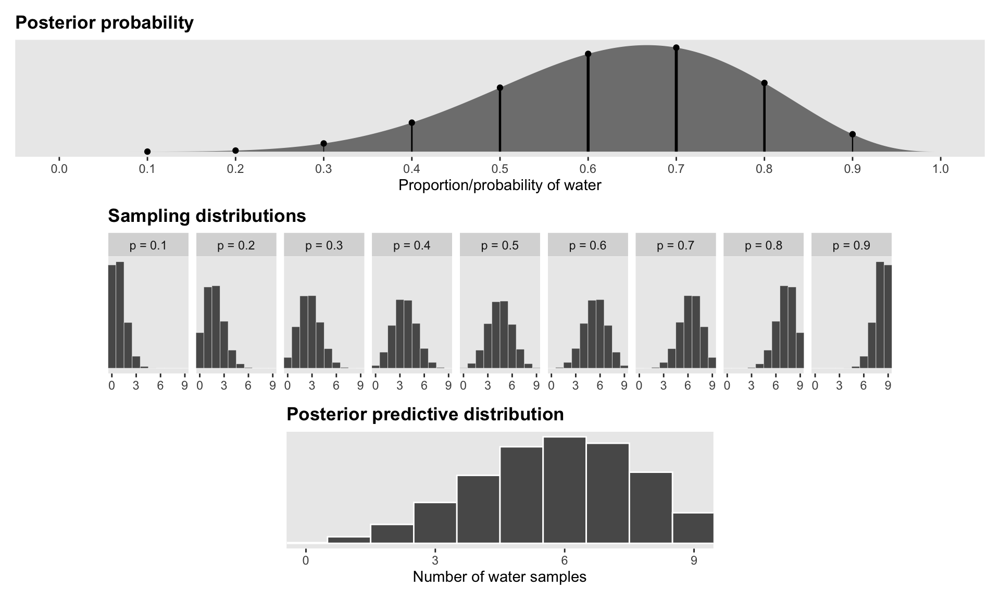
brms and tidybayes version of all this
Ooh neat, you can pass single values as data instead of a data frame! Everything else here looks like regular brms stuff.
model_globe <- brm(
bf(water | trials(9) ~ 0 + Intercept),
data = list(water = 6),
family = binomial(link = "identity"),
# Flat uniform prior
prior(beta(1, 1), class = b, lb = 0, ub = 1),
iter = 5000, warmup = 1000, seed = 1234,
# TODO: Eventually switch to cmdstanr once this issue is fixed
# https://github.com/quarto-dev/quarto-cli/issues/2258
backend = "rstan", cores = 4
)
## Compiling Stan program...
## Trying to compile a simple C file
## Start samplingCredible intervals / HPDI / etc.
# Using broom.mixed
tidy(model_globe, effects = "fixed",
conf.level = 0.5, conf.method = "HPDinterval")
## # A tibble: 1 × 7
## effect component term estimate std.error conf.low conf.high
## <chr> <chr> <chr> <dbl> <dbl> <dbl> <dbl>
## 1 fixed cond (Intercept) 0.639 0.137 0.568 0.761
# Using the posterior package
draws <- as_draws_array(model_globe)
summarize_draws(draws, default_summary_measures()) %>%
filter(variable == "b_Intercept")
## # A tibble: 1 × 7
## variable mean median sd mad q5 q95
## <chr> <dbl> <dbl> <dbl> <dbl> <dbl> <dbl>
## 1 b_Intercept 0.639 0.648 0.137 0.144 0.400 0.848
# Using tidybayes
# get_variables(model_globe)
model_globe %>%
spread_draws(b_Intercept) %>%
median_hdci(b_Intercept, .width = c(0.5, 0.89, 0.95))
## # A tibble: 3 × 6
## b_Intercept .lower .upper .width .point .interval
## <dbl> <dbl> <dbl> <dbl> <chr> <chr>
## 1 0.648 0.568 0.761 0.5 median hdci
## 2 0.648 0.430 0.864 0.89 median hdci
## 3 0.648 0.374 0.892 0.95 median hdci
model_globe %>%
gather_draws(b_Intercept) %>%
ggplot(aes(x = .value, y = .variable)) +
stat_halfeye()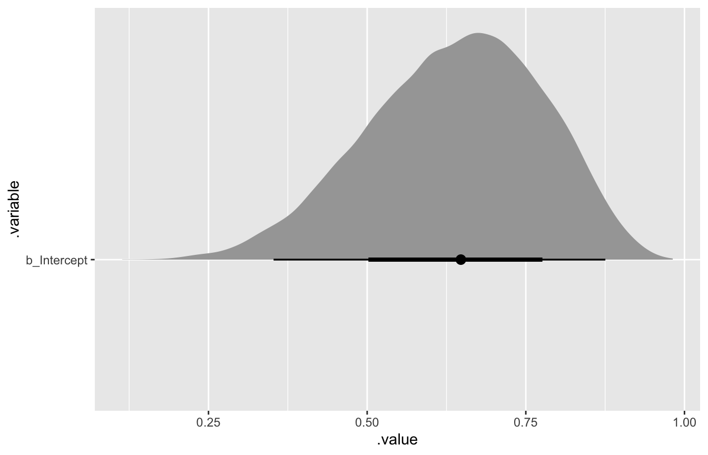
Predictions
model_globe %>%
predicted_draws(newdata = tibble(nothing = 1)) %>%
ggplot(aes(x = .prediction)) +
geom_histogram(binwidth = 1, center = 0, color = "white", size = 0.5) +
scale_x_continuous(breaks = seq(0, 9, 3)) +
scale_y_continuous(breaks = NULL) +
coord_cartesian(xlim = c(0, 9)) +
labs(x = "Number of water samples", y = NULL, title = "Posterior predictive distribution") +
theme(panel.grid = element_blank(),
plot.title = element_text(face = "bold"))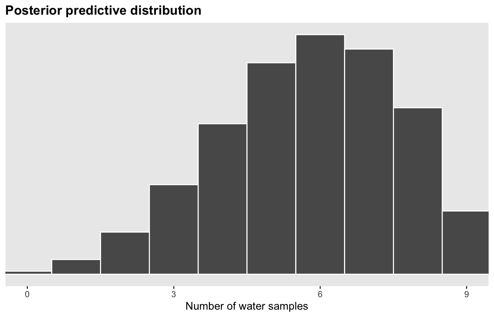